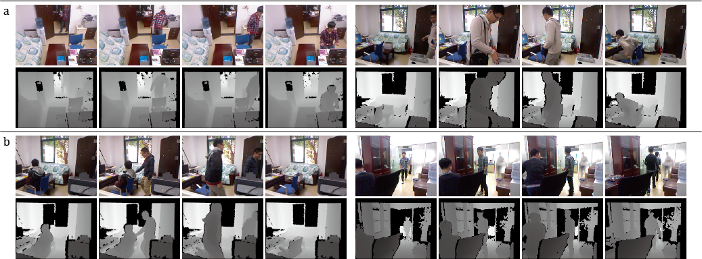

A rgb-d dataset about human activity is created(leading by YalongLi). Besides, one patent and one paper are based on this dataset.
1. Office Activity RGB-D Dataset[download]
2. [专利104217214B]基于可配置卷积神经网络的rgb-d人物行为识别方法。林倞，王可泽，李亚龙，王小龙。[pdf]
3. 3D Human Activity Recognition with Reconfigurable Convolutional Neural Networks. In ACM International Conference on Multimedia (ACM MM), 2014. (full paper, oral), Keze Wang, Xiaolong Wang, and Liang Lin.[pdf]

The Office Activity (OA) dataset collected by us is a more complex activity dataset which covers the common daily activities happened in office. It is a large dataset with 1180 RGB-D activity sequences. To capture human activities in multi-views, we set three RGB-D sensors in different viewpoints for recording and each subject is asked to perform twice in one activity. To increase the variability of the activities, we record them in two different scenes, i.e., two different offices. More importantly, we not only consider the single human activity, but also deal with the problem with more than one people.
The dataset consists of two parts: OA1 (activities performed by a single subject) and OA2 (activities performed by two subjects). In OA1, there are 10 classes of activities performed by five subjects, which include {answering-phones, arranging-files, eating, moving-objects, going-to-work, finding-objects, mopping, sleeping, taking-water, wandering}Demo. In OA2, we have 10 activities involving two peoples as { asking-and-away, called-away, carrying, chatting, delivering, eating-and-chating, having-guest, seeking-help, shaking-hands, showing}Demo.
OA1 Download (480x640 resolution, 69GB), (240x320 resolution, 24GB), (120x160 resolution, 7GB), (60x80 resolution, 2GB)
OA2 Download(480x640 resolution, 83 GB), (240x320 resolution, 28GB), (120x160, resolution, 8GB), (60x80 resolution, 2GB)